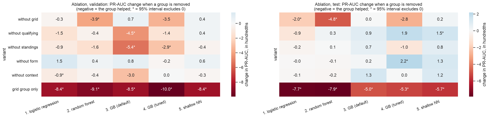

Section 3 justified each feature before training. The ablation measures each group's contribution after training: we remove one group at a time and retrain with rows, hyperparameters and preprocessing unchanged, for all five models (the forest and the network averaged over 3 seeds), each change with a paired race-bootstrap interval. Rule (D30): a group or feature is removed from a model only if removing it improves that model's validation PR-AUC with an interval entirely above 0.
| variant (validation) | LR | RF | GB default | GB tuned | NN |
|---|---|---|---|---|---|
| all 18 features (PR-AUC) | 0.723 | 0.730 | 0.724 | 0.736 | 0.723 |
| without grid | −0.003 | −0.039* | +0.007 | −0.035 | +0.004 |
| without qualifying | −0.015 | −0.004 | −0.045* | −0.014 | +0.004 |
| without standings | −0.009 | −0.016 | −0.054* | −0.029* | −0.004 |
| without form | +0.015 | +0.004 | +0.008 | −0.003 | +0.006 |
| without context | −0.009* | −0.004 | −0.030 | 0.000 | −0.003 |
| grid group only | −0.084* | −0.091* | −0.085* | −0.100* | −0.084* |
Table 4.7 Change in validation PR-AUC against all 18 features (negative = the removed group helped). * = 95% paired race-bootstrap interval excludes 0. Test-season changes are in notebook §10.

experience) for the logistic regression.experience alone hurts the logistic regression significantly (−0.009, interval −0.018 to −0.002); removing grid_penalty or driver_age is within noise for every model.pit_lane_start, home_race, field_size, one at a time and all three together) never improves any model significantly; for the logistic regression every change is within ±0.001. This confirms D30.